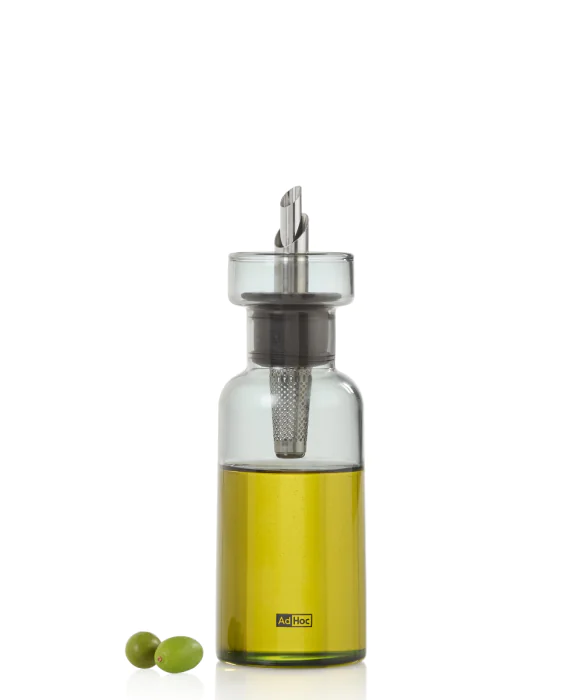
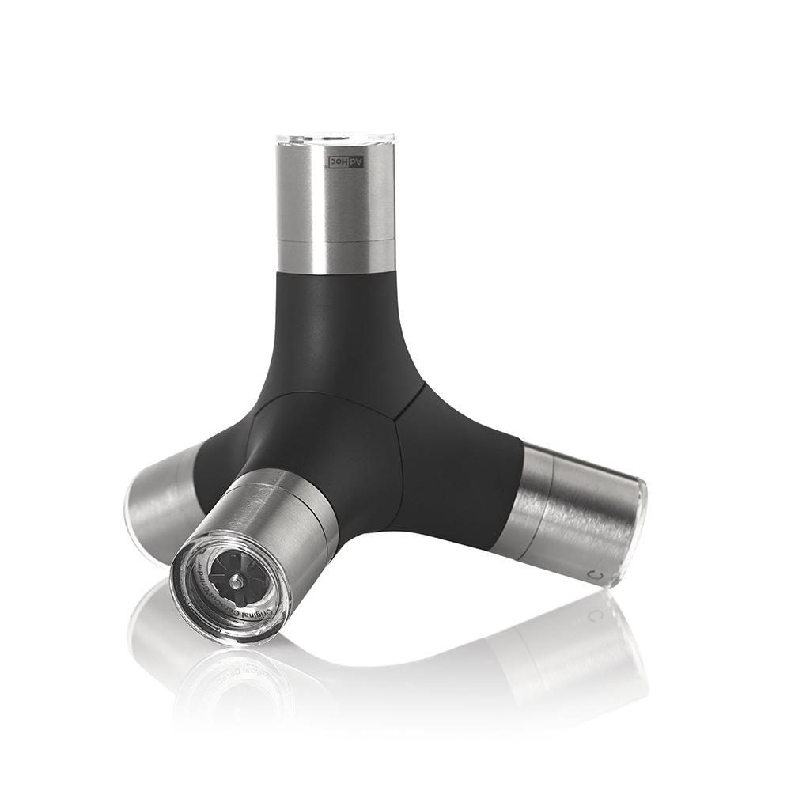
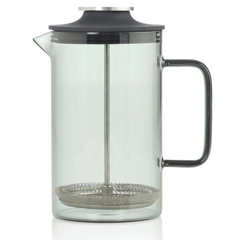
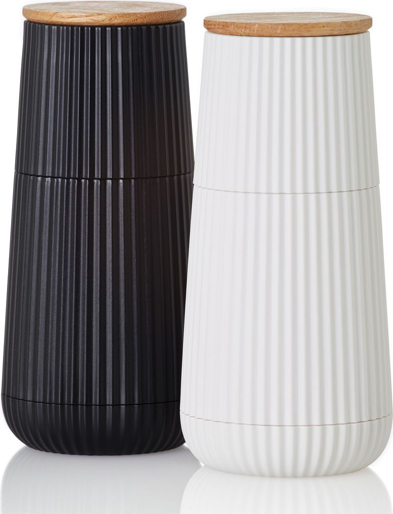
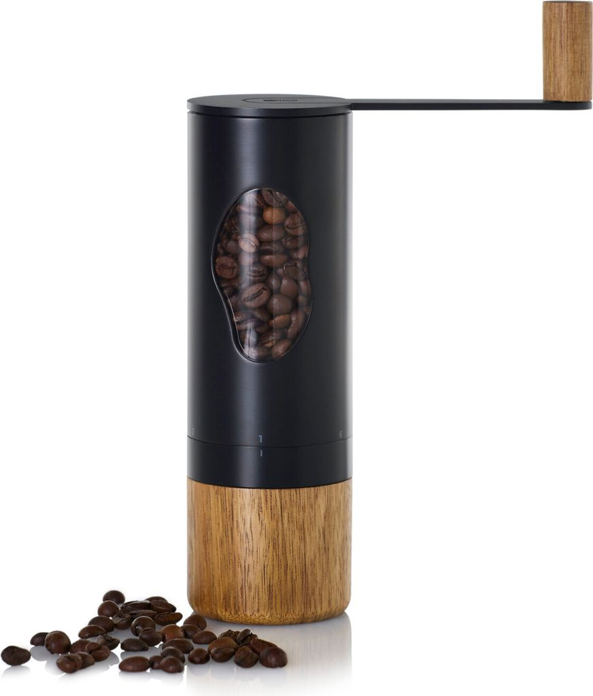
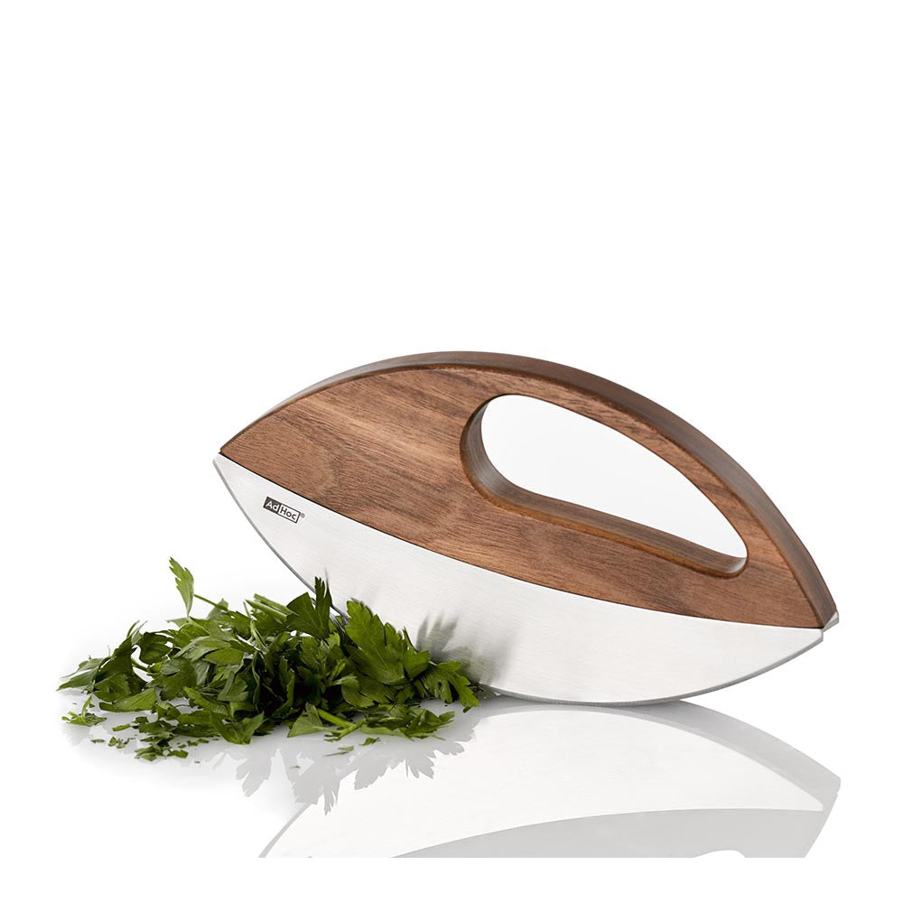

Observe
Rituale, Bedürfnisse und den realen Nutzungskontext lesen.
Senior Industrial Designer · Mannheim
Produkte, die technische Präzision und emotionale Klarheit in eine selbstverständliche Form bringen.
Selected Works ↓01 / Haltung
Gutes Industriedesign beginnt nicht mit einer Silhouette, sondern mit dem Verständnis für Nutzung, Material und Fertigung.
Roland Kreiters Arbeiten verbinden eine reduzierte Formensprache mit präziser Funktion – vom täglichen Küchenwerkzeug bis zum langlebigen Markenprodukt.
Rituale, Bedürfnisse und den realen Nutzungskontext lesen.
Komplexität auf das Wesentliche verdichten – ohne Charakter zu verlieren.
Idee, Konstruktion und Produktion zu einem stimmigen Ganzen führen.
02 / Selected Works
Eine Auswahl öffentlich dokumentierter Produktarbeiten.

Zitronenpresse aus Edelstahl – skulptural in Ruhe, intuitiv in der Anwendung.

Kontrolliertes Dosieren, tropffreies Ausgießen und ein präziser Materialmix.

Vier Gewürze, ein kompakter Körper, magnetisch zusammengeführt.

Eine French Press, deren Klarheit vom Brühvorgang bis zur Reinigung gedacht ist.

Vertikale Struktur, ruhige Proportionen und haptischer Kontrast.

Manuelles Mahlen als bewusstes Ritual – robust, direkt und sinnlich.

Werkzeug und Bewegung werden zu einer einzigen, fließenden Geste.
03 / Recognition
Dokumentierte Auszeichnungen für ausgewählte Arbeiten.
mysqueeze · Jury unter Vorsitz von Philippe Starck
Magnetic 4in1 Mill GIANT · Winner
AromaPour · Winner
AromaPour · Product Design
Impact French Press · Winner, Tabletop
Quellen und Prüfstatus sind in der Projektdokumentation hinterlegt.
04 / Profile
Geboren 1983 in Rumänien, aufgewachsen in Deutschland. Nach einer Ausbildung im Produktionsmodellbau studierte Roland Kreiter Industrial Design an der Hochschule Darmstadt.
Modellbau Satzke
Hochschule Darmstadt · Diplom
Philippe Starck · Paris
Alessi
Artefakt
sieger design
AdHoc Entwicklung und Vertrieb GmbH
05 / Contact
Für Produktentwicklung, Industrial Design und ausgewählte Kooperationen.
Kontakt über XING ↗